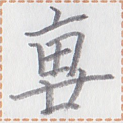
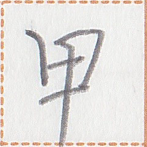

| 善日 | 1 | kait kia1 | 善日 |   | interjection | greeting | hello |
| 汝 | 176 | mua2 | 汝 |  | noun | | you |
| 言 | 40 | zep1 | 言 |  | verb | | to say |
| 何 | 58 | nan2 | 何 |  | noun | interrogative | what |
| 彼等 | 39 | zap2 ge | 彼等 |   | noun | | they |
| 在 | 80 | aim2 | 在 |  | verb-modifier | aspect marker | be ~ing |
| 為 | 29 | zau | 為 |  | verb | | to do |
| 終 | 112 | ta | 終 |  | post-verbial / sentence-final particle | aspect marker | did |
| 力 | 47 | py | 力 |  | verb-modifier | modality marker | can |
| 我 | 325 | pai2 | 我 |  | noun | | I |
| 乎 | 96 | yn2 | 乎 |  | sentence-final particle | question marker | ... ? |
| 行 // 労 | 4 | mok1 // naip2 | 行 // 労 |  // //  | verb-object compound | separable | to work |
| 何2 | 24 | nan2 | 何 | | noun-modifier | interrogative | what kind of |
| 彼 | 281 | zap2 | 彼 | | noun | | he/she |
| 於 | 70 | ie | 於 |  | coverb | takes a place / time | at |
| 何処 | 30 | nan2 hue | 何処 |  | place word | interrogative | what place |
| 労 | 23 | naip2 | 労 | | verb | | to work |
| 行 | 79 | mok1 | 行 | | verb | takes a place | to go to |
| 心 | 54 | hia1 | 心 |  | clause-taker | | to want to |
| 何処2 | 1 | nan2 hue | 何処 | | noun-modifier | interrogative | of what place |
| 人 | 47 | cuk2 | 人 |  | noun | | person/people |
| 之 | 210 | a | 之 |  | noun-conjunction | | ~'s ~ |
| 口 | 32 | iam1 | 口 |  | verb | | to eat |
| 口物 | 4 | iam1 ku | 口物 |  | verb-object compound | | to eat something |
| 在5 | 34 | aim2 | 在 | | verb | | to exist |
| 在7 | 17 | aim2 | 在 | | verb | | to be at {someone's} place |
| 耳識 | 9 | lua1 can2 | 耳識 |   | verb | | listen to |
| 周 | 15 | cei2 | 周 |  | coverb | takes a place / time | around, near |
| 此日 | 26 | ka1 kia1 | 此日 |  | temporal word | | today, now |
| 如 | 13 | em | 如 |  | verb | | to be like |
| 行善 | 1 | mok1 kait | 行善 | | verb | | for things to go well |
| 心来 | 3 | hia1 sak2 | 心来 |  | verb | | to feel |
| 心2 | 1 | hia1 | 心 | | clause-taker | | to feel that |
| 汝2 | 19 | mua2 | 汝 | | noun-modifier | | your |
| 労件 | 6 | naip2 uo1 | 労件 |  | noun | | work |
| 善 | 24 | kait | 善 | | verb | | to be okay |
| 行目 | 2 | mok1 ta1 | 行目 |  | verb | | to take a look |
| 無 | 112 | mun1 | 無 |  | verb-modifier | negative marker | not |
| 学人 | 13 | nui2 cuk2 | 学人 |  | noun | | student |
| 心3 | 8 | hia1 | 心 | | verb | | to have in one's mind / to love |
| 心善 | 39 | hia1 kait | 心善 | | verb | | to like |
| 労2 | 12 | naip2 | 労 | | noun | | work |
| 冠国 | 24 | ai2 sip1 | 冠国 |   | place word | | the Ai'ren Republic |
| 大 | 14 | ma1 | 大 |  | verb | | to be big |
| ∅ | 109 | ∅ | ∅ |  | zero-copula | | to be |
| 淮人 | 5 | uep1 cuk2 | 淮人 |  | noun | | a Vefisaitē |
| 淮国 | 10 | uep1 sip1 | 淮国 | | noun | | the Vefisait Republic |
| 何3 | 1 | nan2 | 何 | | noun | chiefly subject | who |
| 如2 | 13 | em | 如 | | coverb | | in such a way |
| 天神 | 12 | syt2 tun2 | 天神 |   | place word | | Makati (the capital of the Ai'ren Republic) |
| 行2 | 37 | mok1 | 行 | | verb-modifier | modality marker | will |
| 冠人 | 2 | ai2 cuk2 | 冠人 | | noun | | a person of the Ai'ren Republic |
| 此処 | 20 | ka1 hue | 此処 | | place word | | this place |
| 此 | 61 | ka1 | 此 | | noun | | this |
| 我2 | 49 | pai2 | 我 | | noun-modifier | | my |
| 家 | 63 | mut2 | 家 |  | place word | | house |
| 大処 | 1 | ma1 hue | 大処 | | place word | | big place |
| 来 | 4 | sak2 | 来 | | verb | takes a place | to be from |
| 識2 | 7 | can2 | 識 | | question-clause-taker | | to know the answer to the question clause |
| 来2 | 23 | sak2 | 来 | | verb | | to come |
| 何時 | 20 | nan2 kak | 何時 |  | temporal word | interrogative | when |
| 来3 | 8 | sak2 | 来 | | verb | takes a place | to come to |
| 汝等 | 10 | mua2 ge | 汝等 | | noun | | you guys, you all |
| 識来 | 4 | can2 sak2 | 識来 | | verb | | to understand |
| 耳 | 8 | lua1 | 耳 | | verb | | to hear |
| 而 | 34 | ua | 而 |  | conjunction | | and |
| 友 | 25 | hi1 | 友 |  | noun | | friend |
| 極 | 123 | kit | 極 |  | verb-modifier | intensifier | very much |
| 我等 | 32 | pai2 ge | 我等 | | noun | | we |
| 識 // 言 | 4 | can2 // zep1 | 識 // 言 | // | verb-verbalObject compound | | to understand what one says |
| 行7 | 3 | mok1 | 行 | | post-verbial particle | | movement-marker of departure |
| 言2 | 2 | zep1 | 言 | | question-clause-taker | | to tell someone the answer to the question clause |
| 書 | 17 | ak1 | 書 |  | noun | | book |
| 此2 | 84 | ka1 | 此 | | noun-modifier | | this |
| 於2 | 3 | ie | 於 | | coverb | | out of (a set) / choosing from (a set) |
| (噫) | 11 | (a) | (噫) | ( ) ) | sentence-final particle | | (placed after 之 to mark that the sentence ends with a possessive) |
| 彼3 | 2 | zap2 | 彼 | | noun-modifier | | that |
| 心受 | 4 | hia1 guk2 | 心受 |  | verb | | to want |
| 与 | 15 | tui2 {ie N} | 与 {於N} |  {N} {N} | verb | | to give {to someone} |
| 於1 | 73 | ie | 於 | | coverb | | (indirect object of a verb) |
| 之2 | 53 | a | 之 | | relativizer | | relativizer |
| 全 | 4 | be1 | 全 |  | noun | | anything |
| 言3 | 1 | S {N} zep1 | S {N} 言 | S {N} | verb | | for S to say {to N} |
| 加 | 11 | at | 加 |  | coverb | | with |
| 同 | 8 | bap | 同 |  | verb-modifier | | also |
| 噫 | 22 | a | 噫 | | sentence-final particle | | |
| 心0 | 27 | hia1 | 心 | | imperative-verb-modifier | | I want you to |
| 下 | 28 | ut2 | 下 |  | post-verbial particle | politeness marker | (politeness) |
| 与2 | 9 | tui2 | 与 | | clause-taker | | to allow A to V |
| 筆 | 1 | kua2 | 筆 |  | name | | Qa (name) |
| 下2 | 6 | ut2 {ie N} | 下 {於N} | {N} | verb | | to descend {to a place} |
| 席 | 1 | cy2 | 席 |  | place word | | seat |
| 学処 | 28 | nui2 hue | 学処 | | place word | | school |
| 在3 | 38 | aim2 {ie N} | 在 {於N} | {N} | verb | | to be {at a place} |
| 与 // 学 | 28 | tui2 // nui2 | 与 // 学 | // | verb-object compound | | to teach |
| 与学人 | 20 | tui2 nui2 cuk2 | 与学人 | | noun | | teacher |
| 善2 | 11 | kait | 善 | | noun-modifier | | good |
| 行目2 | 4 | mok1 ta1 | 行目 | | verb | | to go see |
| 行4 | 3 | mok1 | 行 | | verb | | to become |
| 学 | 35 | nui2 | 学 | | verb | | study |
| 在4 | 5 | aim2 | 在 | | interjection | | yes |
| 善3 | 3 | kait | 善 | | verb | | to be adequate |
| 何故 | 15 | nan2 xit2 | 何故 |  | reason word | interrogative | why |
| 於一 | 3 | ie et2 | 於一 |  | coverb | | for every ... |
| 一 | 42 | et2 | 一 | | noun-modifier | numeral | one |
| 文 | 1 | tauk1 | 文 |  | noun | | sentence |
| 言4 | 2 | zep1 {ie N} | 言 {於N} | {N} | verb | | to say {to someone} |
| 少 | 5 | hue1 | 少 |  | noun | | a little thing |
| 須 | 29 | ly | 須 |  | verb-modifier | modality marker | should |
| 此時 | 17 | ka1 kak | 此時 | | temporal word | | now |
| 何片 | 1 | nan2 zuo1 | 何片 |  | temporal word | interrogative | which percent-day |
| 在多 | 1 | aim2 taun1 | 在多 |  | verb | | to be plentiful |
| 多 | 29 | taun1 | 多 | | noun-modifier | | a lot of |
| 銭 | 15 | su1 | 銭 |  | noun | | money |
| 言5 | 1 | zep1 {N} {N} | 言 | | verb | | to tell {someone} {something} |
| 或 | 2 | cue1 | 或 |  | noun | | something |
| 善4 | 1 | kait | 善 | | interjection | | yes |
| 風在 | 11 | pua2 aim2 | 風在 |  | verb | | to be interesting |
| 位 | 6 | pui1 | 位 |  | quantity unit | | ~th ~ |
| 日 | 10 | kia1 | 日 | | temporal word | | day |
| 下3 | 1 | ut2 | 下 | | noun-modifier | | next |
| 月 | 3 | xem1 | 月 |  | noun | | month |
| 天風 | 11 | syt2 pua2 | 天風 | | noun | | weather |
| 須多 | 4 | ly taun1 | 須多 | | verb | | to be busy |
| 於0 | 16 | ie | 於 | | coverb | | at {someone's} place |
| 須多2 | 1 | ly taun1 | 須多 | | noun | | obligation / task / what one is busy about / what one must do |
| 春 | 8 | iei2 | 春 |  | name | | Yay (name) |
| xizi | 59 | xizi | xizi |   | name suffix | | Mr. ..., Ms. ... |
| 於dur | 9 | ie | 於 | | coverb | takes a time | during, for |
| 十 | 5 | nun1 | 十 |  | noun-modifier | numeral | ten |
| 入力 | 2 | lit1 py {ie N} | 入力 {於N} |  {N} {N} | verb | | to put effort {into N} |
| 心4 | 2 | hia1 | 心 | | clause-taker | | to think that |
| 真 | 5 | put | 真 |  | verb | | to be true |
| 彼2 | 19 | zap2 | 彼 | | noun-modifier | | his/her |
| 在6 | 25 | aim2 | 在 | | verb | takes a place | to be at |
| 識 | 47 | can2 | 識 | | verb | | to know |
| 術 | 7 | sit1 | 術 |  | noun | | method |
| 牌言 | 27 | pek2 zep1 | 牌言 |  | noun | | Pekzep |
| 筆2 | 13 | kua2 | 筆 | | verb | | to write |
| 勿論 | 1 | nau zui1 | 勿論 |   | interjection | | of course |
| 其 | 5 | ze1 | 其 |  | noun | | that |
| 清字 | 6 | lin man1 | 清字 |   | noun | | Linzklā character |
| 学友 | 9 | nui2 hi1 | 学友 | | noun | | classmate |
| 銭無 | 1 | su1 mun1 | 銭無 | | verb | | to have no money |
| 終而 | 1 | ta ua | 終而 | | sentence-modifier | | in the end |
| xizi噫 | 3 | xizi a | xizi噫 | | interjection | | excuse me |
| 手言機 | 7 | hop1 zep1 kik1 | 手言機 |   | noun | | cell phone |
| 生銭 | 14 | ian1 su1 {ie N} | 生銭 {於N} |  {N} {N} | verb | | to buy {N} |
| 於q | 2 | ie | 於 | | coverb | | pertaining to this amount of money |
| 生 | 4 | ian1 | 生 | | verb | | to go out |
| 再来 | 14 | ty sak2 | 再来 |  | verb | takes a place | to return to |
| 上学処 | 7 | sau2 nui2 hue | 上学処 |  | noun | | university |
| 使 | 21 | sui1 | 使 |  | verb | | to use |
| 極2 | 1 | kit | 極 | | noun-modifier | | a lot of |
| 母 | 9 | mam1 | 母 |  | noun | | mother |
| 待 | 1 | tim1 | 待 |  | clause-taker | | to wait for A to V |
| 心 // 故 | 6 | hia1 // xit2 | 心 // 故 {於N} | // {N} | verb-object compound | | to ask {someone} |
| 言言 | 2 | zep1 zep1 | 言言 | | noun | | phrase |
| 意 | 2 | xa2 | 意 |  | noun | | meaning |
| 於3 | 7 | ie | 於 | | coverb | | in such a way |
| 衣 | 15 | tak1 | 衣 |  | noun | | clothing |
| 琴 | 1 | lia1 | 琴 |  | name | | Lia (name) |
| 心善2 | 12 | hia1 kait | 心善 | | clause-taker | | to like to |
| 使銭 | 3 | sui1 su1 | 使銭 | | verb | | to buy |
| 心善於別 | 1 | hia1 kait ie pau1 | 心善於別 |  | clause-taker | | to prefer to |
| 唯 | 7 | tet | 唯 |  | verb-modifier | | only |
| 一2 | 4 | et2 | 一 | | noun | | one thing |
| 二 | 1 | ik2 | 二 |  | noun | | two things |
| 冠国2 | 1 | ai2 sip1 | 冠国 | | noun-modifier | | The Ai'ren Republic's |
| 地心 | 8 | huep2 hia1 | 地心 |  | noun | | culture |
| 淮国2 | 1 | uep1 sip1 | 淮国 | | noun-modifier | | The Vefisait Republic's |
| 毎毎 | 2 | tut1 tut1 | 毎毎 |  | noun-modifier | | each one's |
| 開銭処 | 3 | nam2 su1 hue | 開銭処 |  | noun | | open-air market |
| 哩言 | 33 | lip zep1 | 哩言 |  | noun | | Linepāine |
| 始 | 6 | hut2 | 始 |  | coverb | takes a time / place | beginning from, from |
| 等 | 9 | ge | 等 | | noun suffix | | (plural) |
| 於4 | 5 | ie | 於 | | coverb | | because of |
| 哩言2 | 3 | lip zep1 | 哩言 | | noun-modifier | | of Linepāine |
| 風在2 | 1 | pua2 aim2 {ie N} | 風在 {於N} | {N} | verb | | for N to be interesting |
| 硬 | 16 | pek1 | 硬 |  | verb | | to be difficult |
| xizi xizi | 5 | xizi xizi | xizi xizi | | interjection | | excuse me |
| 四 | 4 | ap1 | 四 |  | noun-modifier | numeral | four |
| 星 | 8 | pet2 | 星 |  | temporal word | | year |
| 全2 | 9 | be1 | 全 | | noun-modifier | | all |
| 識3 | 2 | can2 | 識 | | clause-taker | | to know that |
| 善5 | 1 | kait | 善 | | verb-modifier | | well, proficiently |
| 心 // 闇 | 18 | hia1 // huet | 心 // 闇 | //  | verb-object compound | | to be tired |
| 行5 | 3 | mok1 | 行 | | clause-taker | | to become |
| 別普 | 1 | pau1 huai2 | 別普 |  | verb-modifier | | especially |
| 倉 | 7 | li1 | 倉 |  | noun | | computer |
| 筆処 | 10 | kua2 hue | 筆処 | | place word | | Quahua (a large city in the Ai'ren Republic) |
| 心道 | 1 | hia1 po1 | 心道 |  | noun | | the desired way |
| 勿心 | 2 | nau hia1 | 勿心 | | interjection | | no need to care about it |
| 再来2 | 8 | ty sak2 | 再来 {於N} | {N} | verb | | to return to |
| 目 | 20 | ta1 | 目 | | verb | | see |
| 行絵 | 11 | mok1 lek1 | 行絵 |  | noun | | movie |
| 来4 | 1 | sak2 | 来 | | verb | | to be open to public and reach us |
| 待2 | 4 | tim1 | 待 | | verb | | to wait for |
| 片 | 2 | zuo1 | 片 | | quantity unit | | percent-day |
| 行 // 星周 | 2 | mok1 // pet2 cei2 | 行 // 星周 | // | verb-object compound | | to age ~ years |
| 同2 | 2 | bap | 同 | | noun-modifier | | the same |
| 高 | 1 | sue1 | 高 |  | name | | Zwuh (name) |
| 少 // 星 | 2 | hue1 // pet2 | 少 // 星 | // | verb-object compound | | to be ~ years younger |
| 二2 | 17 | ik2 | 二 | | noun-modifier | numeral | two |
| 於5 | 10 | ie | 於 | | coverb | | compared to |
| 皇 | 2 | tam2 | 皇 |  | name | | Tam (name) |
| 定 | 1 | huap1 | 定 |  | verb | | to be ready |
| 目 // 書 | 20 | ta1 // ak1 | 目 // 書 | // | verb-object compound | | to read books |
| 父 | 16 | kuak1 | 父 |  | noun | | father |
| 論 | 1 | zui1 | 論 | | verb | | to discuss |
| 心善於 | 2 | hia1 kait ie | 心善於 | | clause-taking interjection | | thank you for |
| 助 | 9 | uaip2 | 助 |  | verb | | to help |
| 無3 | 11 | mun1 | 無 | | verb | | to not exist |
| 少時 | 1 | hue1 kak | 少時 | | temporal word | | a moment |
| 心善3 | 1 | hia1 kait | 心善 | | interjection | | thank you |
| 多2 | 5 | taun1 | 多 | | verb | | to be plentiful |
| 助2 | 1 | uaip2 | 助 | | clause-taker | | to help A V |
| 心受2 | 2 | hia1 guk2 | 心受 | | verb | | to need |
| 助3 | 3 | uaip2 | 助 | | noun | | help |
| 受 // 裁学 | 2 | guk2 // xy1 nui2 | 受 // 裁学 | //  | verb-object compound | | to take an exam |
| 層 | 1 | gy1 | 層 |  | noun | | story (of a building) |
| 試 | 1 | kop1 | 試 |  | verb | | to try |
| 識 // 心 | 2 | can2 // hia1 | 識 // 心 | // | verb-object compound | | to understand [someone] |
| 日日 | 2 | kia1 kia1 | 日日 | | temporal word | | every day |
| 生寝 | 1 | ian1 hok1 | 生寝 |  | verb | | to get up |
| 下時 | 1 | ut2 kak | 下時 | | temporal word | | late time |
| 口 // 水 | 6 | iam1 // nua2 | 口 // 水 | //  | verb-object compound | | to drink |
| 百 | 2 | kit1 | 百 |  | noun-modifier | numeral | a hundred |
| 銭3 | 3 | su1 | 銭 | | noun | | zooh |
| 水類 | 3 | nua2 suo2 | 水類 |  | noun | | liquid |
| 少2 | 2 | hue1 | 少 | | noun-modifier | | a little |
| 激 | 10 | gak1 | 激 |  | post-verbial / sentence-final particle of manner | | quickly |
| 在行 | 3 | aim2 mok1 | 在行 | | verb-modifier | aspect marker | to continue to |
| 認 | 2 | hio1 | 認 |  | clause-taker | | to accept that |
| 定2 | 1 | huap1 | 定 | | noun | | decision |
| 男 | 6 | ki1 | 男 |  | noun | | male |
| 心無之 | 1 | hia1 mun1 a | 心無之 | | verb-modifier | | casually |
| 生行 | 2 | ian1 mok1 | 生行 | | verb | | to leave |
| 集 | 3 | dat2 | 集 |  | noun | | province |
| 手 | 7 | hop1 | 手 | | verb | | to hold |
| 立 | 1 | lo | 立 |  | verb | | to stand |
| 試2 | 2 | kop1 | 試 | | clause-taker | | to try to |
| 力2 | 1 | py | 力 | | verb | | to be able to do {something} |
| 力3 | 1 | py | 力 | | clause-taker | | allow (oneself) to V |
| 為 // 件 | 2 | zau // uo1 | 為 // 件 | // | verb-object compound | | to do thing |
| 類 | 1 | suo2 | 類 | | subordinating particle | | ~ kind of ~ |
| 此3 | 29 | ka1 | 此 | | nominative case marker | | as for ..., it ... |
| 端 | 1 | tau2 | 端 |  | noun | | limit |
| 国 | 16 | sip1 | 国 | | noun | | country |
| 一下 | 1 | et2 ut2 | 一下 | | noun-modifier | | next |
| 道 | 3 | po1 | 道 | | noun | | possibility |
| 件 | 6 | uo1 | 件 | | noun | | matter, affair |
| 亦 | 4 | y | 亦 |  | conjunction | | or |
| 無2 | 4 | mun1 | 無 | | interjection | | no |
| 闇人 | 1 | huet cuk2 | 闇人 | | noun | | Phētās |
| 新 | 4 | lu2 | 新 |  | noun-modifier | | new |
| 手術 | 1 | hop1 sit1 | 手術 | | noun | | how to choose |
| 別 | 1 | pau1 | 別 | | noun | | other thing |
| 言術 | 2 | zep1 sit1 | 言術 | | noun | | way of talking |
| 使言機言 | 8 | sui1 zep1 kik1 zep1 | 使言機言 | | verb | | to make a phone call to |
| 言機 | 6 | zep1 kik1 | 言機 | | noun | | telephone |
| 寝銭処 | 6 | hok1 su1 hue | 寝銭処 | | noun | | hotel |
| ∅3 | 4 | ∅ | ∅ | | verb | takes a place | to be located in |
| 時 | 12 | kak | 時 | | temporal word | requires a modifier | time |
| 互言 | 3 | huat1 zep1 | 互言 |  | verb | | to converse |
| 善6 | 1 | kait | 善 | | clause-taker | | to be welcome to |
| 口銭処 | 4 | iam1 su1 hue | 口銭処 | | place word | | restaurant |
| 識善 | 10 | can2 kait | 識善 | | verb | | to be smart |
| 真2 | 4 | put | 真 | | verb-modifier | | truly |
| 在手 | 15 | aim2 hop1 | 在手 | | verb | | to own |
| 労処 | 12 | naip2 hue | 労処 | | place word | | workplace |
| 男子 | 10 | ki1 kat1 | 男子 |  | noun | requires a modifier | son |
| 三 | 4 | om2 | 三 |  | noun-modifier | numeral | three |
| 周2 | 3 | cei2 | 周 | | verb | takes a place | to be close to |
| 杯 | 14 | niep1 | 杯 |  | quantity unit | | ~ glass of ~ |
| 水 | 5 | nua2 | 水 | | noun | | water |
| 言 // 周 | 6 | zep1 // cei2 | 言 // 周 {N} | // {N} | verb-coverb compound | | to introduce {someone} |
| 長 | 6 | auk2 | 長 |  | verb | | to be long |
| 長2 | 3 | auk2 | 長 | | noun | | length |
| 三十 | 2 | om2 nun1 | 三十 | | noun-modifier | numeral | thirty |
| 片2 | 2 | zuo1 | 片 | | quantity unit | | tswoh (5.54 cm; 2.18 inches) |
| 反言 | 5 | i2 zep1 | 反言 |  | verb | | to answer |
| 善7 | 8 | kait | 善 | | verb | | good, proficient |
| 雪季 | 1 | let1 xot1 | 雪季 |   | name | | Leshēl (name) |
| 笛琴 | 7 | lok1 lia1 | 笛琴 |  | noun | | music |
| 心 // 真 | 6 | hia1 // put | 心 // 真 | // | verb | | to believe |
| 行 // 道 | 10 | mok1 // po1 | 行 // 道 | // | verb-object compound | | to conform to |
| 心5 | 1 | hia1 | 心 | | noun | | feeling, mind |
| 足行 | 7 | xi1 mok1 | 足行 |  | verb | | to walk |
| 静 | 2 | na1 | 静 |  | post-verbial / sentence-final particle of manner | | slowly |
| 龍意 | 2 | hui2 xa2 | 龍意 |  | name | | Fisha (name) |
| 言意 | 1 | zep1 xa2 | 言意 | | noun | | meaning of what someone says |
| 古論 | 2 | sia1 zui1 | 古論 |  | noun | | story, folklore |
| 全下 | 1 | be1 ut2 | 全下 | | temporal word | | at last |
| 謎 | 3 | xep2 | 謎 |  | noun | | problem, question |
| 少3 | 1 | hue1 | 少 | | verb-modifier | | a little |
| 目行 | 2 | ta1 mok1 | 目行 | | verb | | to look into (both literally and figuratively) |
| 謎故 | 1 | xep2 xit2 | 謎故 | | noun | | problem |
| 急行 | 8 | sam1 mok1 | 急行 |  | verb | | to run |
| 全上 | 1 | be1 sau2 | 全上 | | noun | | best thing |
| 挽虫 | 1 | hua1 li2 | 挽虫 |   | name | | Falīa (name) |
| 道2 | 6 | po1 | 道 | | noun | | road |
| 極極 | 4 | kit kit | 極極 | | verb-modifier | intensifier | extremely |
| 善善 | 1 | kait kait | 善善 | | verb | | to be great |
| 律 | 15 | iak1 | 律 |  | name | | Yark (name) |
| 夏 | 8 | xo1 | 夏 |  | name | | Show (name) |
| 寝 | 9 | hok1 | 寝 | | verb | | to be asleep / to go to bed |
| 銭処 | 9 | su1 hue | 銭処 | | noun | | shop, store |
| 何時片 | 1 | nan2 kak zuo1 | 何時片 | | temporal word | interrogative | which percent-day |
| 銭軸 | 4 | su1 la1 | 銭軸 |  | noun | | company |
| 物 | 7 | ku | 物 | | noun | | thing |
| 加2 | 7 | at | 加 | | noun-conjunction | | and |
| 同3 | 5 | bap | 同 | | verb | | to be the same |
| 何星 | 2 | nan2 pet2 | 何星 | | temporal word | interrogative | how many years |
| 五 | 1 | un1 | 五 |  | noun-modifier | numeral | five |
| 叮止 | 2 | tei1 muo1 | 叮止 |   | noun | | bus stop |
| 此故 | 2 | ka1 xit2 | 此故 | | conjunction | | the reason is that |
| 唯心 | 1 | tet hia1 | 唯心 | | clause-taker | | to wish that |
| 下女輩 | 1 | ut2 sa1 huok1 | 下女輩 |   | noun | | younger sister |
| 遊刀銭処 | 1 | tu2 gau2 su1 hue | 遊刀銭処 |   | noun | | toy store |
| 怖 | 7 | zat1 | 怖 |  | verb | | to be scared of |
| 高処 | 1 | sue1 hue | 高処 | | place word | | heights, high place |
| 我等2 | 3 | pai2 ge | 我等 | | noun-modifier | | our |
| 其2 | 9 | ze1 | 其 | | noun-modifier | | that |
| 終入 | 2 | ta lit1 | 終入 | | verb | | to shut down, to stop operating, to disappear |
| 銭倉 | 5 | su1 li1 | 銭倉 | | noun | | bank |
| 無4 | 1 | mun1 | 無 | | noun | | nothing |
| 行6 | 1 | mok1 | 行 | | coverb | | till, until |
| 値 | 1 | mak2 | 値 |  | noun | | number |
| 豊於 | 1 | ho1 ie | 豊於 |  | verb | | to be full of |
| 天与 | 1 | syt2 tui2 | 天与 | | noun | | talent |
| 再識来 | 2 | ty can2 sak2 | 再識来 | | verb | | to remember |
| 再識来2 | 1 | ty can2 sak2 | 再識来 | | clause-taker | | to remember that |
| 名 | 5 | sin1 | 名 |  | noun | | name |
| 軟2 | 1 | ho | 軟 |  | verb-modifier | | easily |
| 心闇2 | 1 | hia1 huet | 心闇 | | noun | | tiredness |
| 受 | 7 | guk2 | 受 | | verb | | to obtain |
| 軟 | 8 | ho | 軟 | | verb | | to be easy, to be simple |
| 言書 | 6 | zep1 ak1 | 言書 | | noun | | dictionary |
| 於6 | 2 | ie | 於 | | coverb | | in {someone's} viewpoint, as for {someone} |
| 於何時 | 1 | ie nan2 kak | 於何時 | | post-verbial / sentence-final particle | | how many times |
| 何時長 | 2 | nan2 kak auk2 | 何時長 | | temporal word | interrogative | how long |
| 言生於 | 1 | zep1 ian1 ie | 言生於 | | verb | | to introduce to {someone} |
| 母父 | 3 | mam1 kuak1 | 母父 | | noun | | parents |
| 星豊 | 4 | pet2 ho1 | 星豊 | | verb | | to be old |
| 門片 | 3 | giau1 zuo1 | 門片 |  | noun | | visa |
| 上時 | 4 | sau2 kak | 上時 | | temporal word | | past |
| 錘 | 1 | xo2 | 錘 |  | verb | | to be important |
| 光島 | 1 | aik2 dop1 | 光島 |   | noun | | Ekadon island |
| 花 | 8 | xuo1 | 花 |  | noun | | flower |
| 嗅善 | 1 | cai1 kait | 嗅善 |  | verb | | to smell good |
| 遠 | 2 | tuai2 | 遠 {於L} |  {L} {L} | verb | | to be far {from L} |
| 如3 | 2 | em | 如 | | verb-modifier | | seemingly |
| 勿 | 11 | nau | 勿 | | imperative-verb-modifier | | I ask you not to |
| 手2 | 1 | hop1 | 手 | | clause-taker | | to hold so that S V |
| 門 | 5 | giau1 | 門 | | noun | | door |
| 開 | 6 | nam2 | 開 | | verb | | open |
| 上下 // 終無 | 2 | sau2 ut2 // ta mun1 | 上下 // 終無 | // | compound | | forever |
| 裁 // 同 | 2 | xy1 // bap | 裁 // 同 {N} | // {N} | verb-coverb compound | | to treat ... as N |
| 美 | 8 | hem1 | 美 |  | verb | | to be beautiful |
| 字 | 2 | man1 | 字 | | noun | | character, letter, alphabet |
| 識善2 | 2 | can2 kait | 識善 | | verb | | to understand [something] well |
| 清 | 2 | lin | 清 | | verb | | to be flawless and beautiful, to be clean |
| 女子 | 8 | sa1 kat1 | 女子 | | noun | requires a modifier | daughter |
| 周3 | 1 | cei2 | 周 | | verb | | to turn to a direction |
| 右 | 1 | ky1 | 右 |  | noun | | right (direction) |
| 車 | 10 | kaun1 | 車 |  | noun | | car |
| 別2 | 3 | pau1 | 別 | | coverb | | except for, excluding |
| 酒 | 9 | no1 | 酒 |  | noun | | alcohol |
| 加3 | 3 | at | 加 | | verb | | to add |
| 之3 | 1 | a | 之 | | noun-conjunction | | (apposition) |
| 翰 | 1 | kuai1 | 翰 |  | name | | Kwai (name) |
| 下 // 目水 | 8 | ut2 // ta1 nua2 | 下 // 目水 | // | verb-object compound | | cry |
| 心真於 | 1 | hia1 put ie | 心真於 | | verb | | to believe |
| 囲 | 8 | pia2 | 囲 |  | noun | | room |
| 囲値 | 1 | pia2 mak2 | 囲値 | | noun | | room number |
| 裁学 | 1 | xy1 nui2 | 裁学 | | noun | | exam |
| 始2 | 4 | hut2 | 始 | | verb | | to begin |
| 始3 | 2 | hut2 | 始 | | clause-taker | | to begin to |
| 満 | 2 | bo1 | 満 |  | verb | | to be full, to be satisfied |
| 行絵箱 | 4 | mok1 lek1 bu1 | 行絵箱 |  | noun | | television |
| 全闇 | 2 | be1 huet | 全闇 | | temporal word | | all night |
| 歌 | 2 | xau1 | 歌 |  | verb | | to sing |
| 歌2 | 1 | xau1 | 歌 | | noun | | song |
| 即 | 9 | hem | 即 |  | conjunction | | then |
| 壊 | 2 | mot2 | 壊 |  | verb | | to die |
| 心来如 | 1 | hia1 sak2 em | 心来如 | | clause-taker | | to feel like |
| 貧 | 2 | hei2 | 貧 |  | verb-modifier | | a little bit |
| 小 | 9 | ni1 | 小 |  | noun-modifier | | small, little |
| 犬 | 15 | pa2 | 犬 |  | noun | | dog |
| 激激 | 1 | gak1 gak1 | 激激 | | post-verbial / sentence-final particle of manner | | very very quickly |
| 月2 | 2 | xem1 | 月 | | name | | Shum (name) |
| 口物2 | 2 | iam1 ku | 口物 | | noun | | food |
| 亦無 | 1 | y mun1 | 亦無 | | interjection | | isn't it? / no? / doesn't he? |
| 失 | 6 | zip1 | 失 |  | verb | | to lose |
| 唯2 | 1 | tet | 唯 | | noun-modifier | | only |
| 心善4 | 5 | hia1 kait | 心善 | | verb | | to be happy |
| 真件 | 1 | put uo1 | 真件 | | noun | | news |
| 心善之 | 1 | hia1 kait a | 心善之 | | verb-modifier | | happily |
| 多3 | 6 | taun1 | 多 | | post-verbial / sentence-final particle of manner | | hard, with effort |
| 毎 | 1 | tut1 | 毎 | | noun | requires a modifier | each |
| 一上日 | 8 | et2 sau2 kia1 | 一上日 | | temporal word | | yesterday |
| 始4 | 1 | hut2 | 始 | | verb | takes a place | to leave |
| 男下輩 | 6 | ki1 ut2 huok1 | 男下輩 | | noun | | younger brother |
| 同4 | 1 | bap | 同 | | coverb | | as much as |
| 上星 | 1 | sau2 pet2 | 上星 | | quantity unit | | ~ years ago |
| 互心 | 2 | huat1 hia1 | 互心 | | noun-modifier | | pertaining to love |
| 無真 | 3 | mun1 put | 無真 | | noun | | lie, false information |
| 謝 | 3 | kuai1 | 謝 |  | verb | | to apologize |
| 来5 | 7 | sak2 | 来 | | post-verbial particle | | movement-marker of arrival |
| 六 | 1 | net2 | 六 |  | noun-modifier | numeral | six |
| 言言 // 周 | 2 | zep1 zep1 // cei2 | 言言 // 周 {N} | // {N} | verb-coverb compound | | to introduce {someone} |
| 目機 | 5 | ta1 kik1 | 目機 | | noun | | camera |
| 手風 | 1 | hop1 pua2 | 手風 | | verb | | succeed |
| 声風 | 2 | cuop2 pua2 | 声風 |  | noun | | news |
| 時2 | 1 | kak | 時 | | noun | | spare time |
| 哇 | 2 | ua | 哇 |  | interjection | | oh |
| 周此 | 1 | cei2 ka1 | 周此 | | post-verbial particle of manner | | partially |
| 豊族 | 1 | ho1 nim2 | 豊族 |  | noun-modifier | | multiethnic |
| 天神上学処 | 1 | syt2 tun2 sau2 nui2 hue | 天神上学処 | | noun | | Zyuttoon University |
| 少4 | 1 | hue1 | 少 | | verb | | to be young |
| ∅2 | 2 | ∅ | ∅ | | relativizer | | relativizer |
| 雪銭 | 4 | let1 su1 | 雪銭 | | noun | | Yuesleone Ledge |
| 百万 | 2 | kit1 ue1 | 百万 |  | noun-modifier | numeral | million |
| 豊 | 1 | ho1 | 豊 | | verb | | to be rich |
| 目甘 | 3 | ta1 tum1 | 目甘 |  | verb | | to be pretty, to be cute |
| 衣2 | 2 | tak1 | 衣 | | noun | | cloth |
| 甘 | 8 | tum1 | 甘 | | verb | | to be pretty, to be cute |
| 激之 | 5 | gak1 a | 激之 | | verb-modifier | | soon |
| 天光 | 1 | syt2 aik2 | 天光 | | noun | | brightness of the sky |
| 字集 | 2 | man1 dat2 | 字集 | | noun | | words |
| 入国書 | 9 | lit1 sip1 ak1 | 入国書 | | noun | | passport |
| 机 | 5 | cet2 | 机 |  | noun | | desk |
| 一下日 | 3 | et2 ut2 kia1 | 一下日 | | temporal word | | tomorrow |
| 何値言 | 1 | nan2 mak2 zep1 | 何値言 | | noun | | how many languages |
| 言6 | 3 | zep1 | 言 | | noun | requires a modifier | language |
| 識 // 言2 | 2 | can2 // zep1 | 識 // 言 | // | verb-object compound | | to understand [someone]'s language |
| 機絵 | 2 | kik1 lek1 | 機絵 | | noun | | photograph |
| 将 | 5 | uai1 | 将 |  | noun | | boss |
| 八 | 1 | nom2 | 八 |  | noun-modifier | numeral | eight |
| 値2 | 2 | mak2 | 値 | | quantity unit | | ~ number of ~ |
| 天水 | 4 | syt2 nua2 | 天水 | | noun | | rain |
| 再為 | 1 | ty zau | 再為 | | verb | | to redo |
| 或人 | 2 | cue1 cuk2 | 或人 | | noun | | someone |
| 行入 | 2 | mok1 lit1 | 行入 | | verb | | to enter, to go in |
| 故 | 1 | xit2 | 故 | | reason word | requires a modifier | reason |
| 火 | 4 | kan1 | 火 |  | verb | | to be hot |
| 訴門 | 9 | u1 giau | 訴門 |  | postmodifier of degree | | too much |
| 女上輩 | 3 | sa1 sau2 huok1 | 女上輩 | | noun | | older sister |
| 筆3 | 5 | kua2 | 筆 | | verb | | pen, writing utensil |
| 散 | 2 | co1 | 散 |  | verb | | to scatter |
| 馬 | 3 | maun1 | 馬 |  | noun | | horse |
| 閉門 | 1 | in2 giau1 | 閉門 |  | verb | | to close, to cease operation, for a facility to stop operating for the day |
| 族 | 3 | nim2 | 族 | | noun | | ethnic group |
| 皇島 | 1 | tam2 dop1 | 皇島 | | noun | | Atalam Island |
| 女 | 2 | sa1 | 女 | | noun | requires a modifier | wife |
| 寝2 | 1 | hok1 | 寝 | | noun | | sleep |
| 星少 | 2 | pet2 hue1 | 星少 | | verb | | to be young |
| 如4 | 1 | em | 如 | | coverb | | as if it were |
| 無手 | 6 | mun1 hop1 | 無手 | | verb | | to not have |
| 別而 | 1 | pau1 ua | 別而 | | conjunction | | but, however |
| 大銭 | 3 | ma1 su1 | 大銭 | | verb | | to be expensive |
| 咍 | 1 | tai | 咍 |  | interjection | | oh my, wow, holy cow (used when being strongly emotional) |
| 周言 | 2 | cei2 zep1 | 周言 | | verb | | to translate |
| 周言人 | 1 | cei2 zep1 cuk2 | 周言人 | | noun | | translator |
| 躍 | 1 | kan1 | 躍 |  | verb | | to jump |
| 高2 | 1 | sue1 | 高 | | post-verbial / sentence-final particle of manner | | high |
| 前 | 1 | son1 | 前 |  | noun suffix | | in front of |
| 寒 | 5 | lok1 | 寒 |  | verb | | to be cold |
| 猫 | 5 | ne2 | 猫 |  | noun | | cat |
| 男2 | 1 | ki1 | 男 | | noun | requires a modifier | husband |
| 天 | 2 | syt2 | 天 | | place word | | sky |
| 青 | 1 | nuok2 | 青 |  | verb | | to be blue |
| 行9 | 3 | mok1 | 行 | | verb | requires an object | to operate a vehicle or any means of transportation |
| 引 | 3 | mi2 | 引 |  | verb | | to pull |
| 悪2 | 3 | non1 | 悪 |  | noun-modifier | | bad |
| ∅4 | 4 | ∅ | ∅ | | relativizer with noun | | relativizer with noun |
| 淮言 | 1 | uep1 zep1 | 淮言 | | noun | | Vefisaitē language |
| 輩島 | 3 | huok1 dop1 | 輩島 | | noun | | Pokyut island |
| 肉 | 2 | gek | 肉 |  | noun | | meat |
| 止 | 4 | muo1 | 止 | | clause-taker | | to stop ~ing |
| 叫 | 2 | puak1 | 叫 |  | verb | | to shout |
| 男上輩 | 3 | ki1 sau2 huok1 | 男上輩 | | noun | | older brother |
| 遊足行 | 2 | tu2 xi1 mok1 | 遊足行 | | verb | | to take a walk, to take a leisurely stroll |
| 行8 | 3 | mok1 | 行 | | verb | | to be operating |
| 立2 | 2 | lo | 立 | | verb | | to build |
| 笑 | 2 | hau2 | 笑 |  | verb | | to laugh |
| 木足 | 1 | hup1 xi1 | 木足 |  | noun | | tree root |
| 木 | 6 | hup1 | 木 | | noun | | tree |
| 謎2 | 1 | xep2 | 謎 | | verb | | to be strange |
| 謎件 | 1 | xep2 uo1 | 謎件 | | noun | | strange issue |
| 其時長 | 1 | ze1 kak auk2 | 其時長 | | temporal word | | that long |
| 女下輩 | 2 | sa1 ut2 huok1 | 女下輩 | | noun | | younger sister |
| 日星 | 2 | kia1 pet2 | 日星 | | noun | | the sun |
| 無人 | 2 | mun1 cuk2 | 無人 | | noun | | no one |
| 其処 | 3 | ze1 hue | 其処 | | place word | | that place |
| 小銭 | 4 | ni1 su1 | 小銭 | | verb | | to be cheap |
| 御広 | 1 | am zie1 | 御広 |   | verb | | to advertise |
| 古 | 3 | sia1 | 古 | | verb | | to be old |
| 小2 | 2 | ni1 | 小 | | verb | | to be small, to be little |
| 輩 | 1 | huok1 | 輩 | | noun | | sibling |
| 紙 | 2 | nin1 | 紙 |  | noun | | some paper, a piece of paper |
| 彼等2 | 1 | zap2 ge | 彼等 | | noun-modifier | | their |
| 入 | 1 | lit1 {ie N} | 入 {於N} | {N} | verb | | to enter {N} |
| 子 | 11 | kat1 | 子 | | noun | | child |
| 茶 | 10 | tia2 | 茶 |  | noun | | tea |
| 花茶 | 1 | xuo1 tia2 | 花茶 | | noun | | flower tea |
| 労友 | 4 | naip2 hi1 | 労友 | | noun | | coworker |
| 常 | 5 | ket | 常 |  | verb-modifier | | always |
| 己2 | 4 | tin1 | 己 |  | noun-modifier | | one's own |
| 女友 | 1 | sa1 hi1 | 女友 | | noun | | female friend |
| 獣 | 1 | saup1 | 獣 |  | noun | | animal |
| 果 | 7 | tua1 | 果 |  | noun | | fruit |
| 再言 | 2 | ty zep1 | 再言 | | verb | | to say again |
| 別国 | 1 | pau1 sip1 | 別国 | | noun | | foreign country |
| 牌言言声 | 6 | pek2 zep1 zep1 cuop2 | 牌言言声 | | noun | | Pekzep pronunciation |
| 言声 | 2 | zep1 cuop2 | 言声 | | noun | | pronunciation |
| 哩言言声 | 2 | lip zep1 zep1 cuop2 | 哩言言声 | | noun | | Linepāine pronunciation |
| 耳識2 | 2 | lua1 can2 | 耳識 | | clause-taker | | to have heard that |
| 直 | 1 | io1 | 直 |  | verb | | to be straight |
| 足 | 4 | xi1 | 足 | | noun | | leg, foot |
| 於inorder | 1 | ie | 於 | | coverb | takes a verb | in order to |
| 清行 | 2 | lin mok1 | 清行 | | verb | | to clean |
| 火4 | 1 | kan1 | 火 | | noun-modifier | | hot |
| 全人 | 6 | be1 cuk2 | 全人 | | noun | | everyone |
| 心散 | 1 | hia1 co1 | 心散 | | noun | | death |
| 色 | 2 | pok | 色 |  | noun | | color |
| 月色 | 3 | xem1 pok | 月色 | | noun | | color yellow |
| 生門 | 1 | ian1 giau1 | 生門 | | noun | | exit |
| 左 | 1 | tyn1 | 左 |  | place word | | on the left |
| 何値 | 1 | nan2 mak2 | 何値 | | noun-modifier | | how many |
| 学友集 | 1 | nui2 hi1 dat2 | 学友集 | | noun | | people in a class |
| 目2 | 1 | ta1 | 目 | | clause-taker | | to see |
| 行 // 後 | 4 | mok1 // yp | 行 // 後 | //  | verb-object compound | | to chase |
| 体 | 1 | tat2 | 体 |  | noun | | body health |
| 席2 | 6 | cy2 | 席 | | verb | | to sit down |
| 王 | 1 | io | 王 |  | noun | | king, leader |
| 種茶 | 11 | det tia2 | 種茶 |  | noun | | coffee |
| 毛 | 2 | im1 | 毛 |  | noun | | fur, hair, bristle |
| 米 | 3 | mo1 | 米 |  | noun | | rice |
| 星name | 14 | pet2 | 星 | | name | | Putt (name) |
| 上学処人 | 1 | sau2 nui2 hue cuk2 | 上学処人 | | noun | | university student |
| 新星善来 | 1 | lu2 pet2 kait sak2 | 新星善来 | | interjection | | Happy New Year! / Happy Birthday! |
| 互 | 4 | huat1 | 互 | | verb-modifier | | to each other, mutually |
| 島 | 1 | dop1 | 島 | | noun | | island |
| 火奮 | 1 | kan1 puat2 | 火奮 |  | verb | | to be angry |
| 心悪 | 4 | hia1 non1 | 心悪 | | verb | | to hate, to dislike |
| 怖2 | 1 | zat1 | 怖 | | clause-taker | | to be afraid of doing |
| 鳥船 | 1 | lup1 muak1 | 鳥船 |   | noun | | airplane, aircraft |
| 声多 | 2 | cuop2 taun1 | 声多 | | verb | | to be noisy |
| 地 | 4 | huep2 | 地 | | noun | | ground, land |
| 使2 | 6 | sui1 | 使 | | coverb | | using, by means of, with |
| 夏season | 3 | xo1 | 夏 | | noun | | summer |
| 冬season | 2 | iat1 | 冬 |  | noun | | winter |
| 集3 | 4 | dat2 | 集 | | verb | | to bring [something] together |
| 全3 | 1 | be1 | 全 | | noun suffix | | all of |
| 遊 | 6 | tu2 | 遊 | | verb | | to play |
| 体豊 | 1 | tat2 ho1 | 体豊 | | verb | | to be fat |
| 享 // 銭 | 6 | sep // su1 | 享 // 銭 |  // // | verb-object compound | | to earn money |
| 付 | 6 | kun2 | 付 |  | verb | | to wear, to put on |
| 魚 | 3 | mui1 | 魚 |  | noun | | fish |
| 川 | 6 | nut2 | 川 |  | noun | | river |
| 川水 | 3 | nut2 nua2 | 川水 | | noun | | river water |
| 貝 | 1 | dit1 | 貝 |  | noun | | shellfish |
| 味善 | 1 | tuik1 kait | 味善 |  | verb | | to be delicious |
| 酒処 | 2 | no1 hue | 酒処 | | place word | | bar |
| 赤2 | 1 | kok1 | 赤 |  | noun-modifier | | red |
| 戦 | 2 | kaik | 戦 |  | verb | | to fight |
| 全地 | 2 | be1 huep2 | 全地 | | noun | | world |
| 道絵 | 4 | po1 lek1 | 道絵 | | noun | | map |
| 入水 | 2 | lit1 nua2 | 入水 | | verb | | to go into the water |
| 船 | 4 | muak1 | 船 | | noun | | ship |
| 下4 | 1 | ut2 | 下 | | post-verbial particle | | movement-marker of descent |
| 撃 | 1 | kut2 | 撃 |  | verb-modifier | intensifier | in a sudden manner |
| 木獣 | 3 | hup1 saup1 | 木獣 | | noun | | rabbit |
| 別3 | 1 | pau1 | 別 | | noun | requires a modifier | the difference (between ~) |
| 闇 | 1 | huet | 闇 | | verb | | to be dark |
| 羊毛 | 1 | po1 im1 | 羊毛 |  | noun | | wool |
| 羊獣 | 1 | po1 saup1 | 羊獣 | | noun | | sheep |
| 石 | 3 | sy2 | 石 |  | noun | | rock, stone |
| 硬phys | 1 | pek1 | 硬 | | verb | | to be physically hard |
| 皇色 | 1 | tam2 pok | 皇色 | | noun | | dark green |
| 刀水 | 2 | gau2 nua2 | 刀水 | | place word | | Gowner (a large city in the Ai'ren Republic, located in Quahua Province) |
| 二下日 | 1 | ik2 ut2 kia1 | 二下日 | | temporal word | | the day after tomorrow |
| 甘挽 | 3 | tum1 hua1 | 甘挽 | | noun | | powder sugar |
| 甘2 | 2 | tum1 | 甘 | | verb | | to be sweet |
| 圧 // 心 | 2 | bet2 // hia1 | 圧 // 心 |  // // | verb-object compound | | to force an action against one's will |
| 祖国 | 1 | so1 sip1 | 祖国 |  | noun | | country inherited from ancestors, home country |
| 広在 | 1 | zie1 aim2 | 広在 | | verb | | to be ubiquitous, to be everywhere |
| 静2 | 2 | na1 | 静 | | verb | | to be silent |
| 風 | 3 | pua2 | 風 | | noun | | wind |
| 貧poor | 1 | hei2 | 貧 | | verb | | to be poor |
| 十一 | 1 | nun1 et2 | 十一 | | noun-modifier | numeral | eleven |
| 春spring | 2 | iei2 | 春 | | noun | | spring season |
| 水在 | 2 | nua2 aim2 | 水在 | | verb | | to be fresh |
| 書銭処 | 4 | ak1 su1 hue | 書銭処 | | noun | | bookstore |
| 包 | 3 | buo1 | 包 |  | noun | | parcel, package, luggage |
| 或処 | 1 | cue1 hue | 或処 | | place word | | somewhere |
| 彼人 | 1 | zap2 cuk2 | 彼人 | | noun | | that person |
| 豊2 | 1 | ho1 | 豊 | | noun-modifier | | rich |
| 風無 | 6 | pua2 mun1 | 風無 | | verb | | to be boring |
| 互心女 | 1 | huat1 hia1 sa1 | 互心女 | | noun | | girlfriend |
| 刀 | 6 | gau2 | 刀 | | verb | | to cut |
| 絵 | 4 | lek1 | 絵 | | noun | | a painting |
| 嗅悪 | 1 | cai1 non1 | 嗅悪 | | verb | | to smell bad |
| 雪 | 2 | let1 | 雪 | | noun | | snow |
| 白 | 3 | liok1 | 白 |  | verb | | to be white |
| 卵 | 3 | uet | 卵 |  | noun | | egg |
| 火果 | 5 | kan1 tua1 | 火果 | | noun | | apple |
| 傷 | 5 | gui2 | 傷 |  | noun | | injury |
| 在手2 | 8 | aim2 hop1 | 在手 | | clause-taker | | to have the experience of ~ing |
| 無手2 | 6 | mun1 hop1 | 無手 | | clause-taker | | to have never done |
| 戦2 | 2 | kaik | 戦 | | noun | | a war |
| 散3 | 1 | co1 | 散 | | verb | euphemism | to lose lives |
| 壊2 | 2 | mot2 | 壊 | | verb | | to break |
| 哦 | 1 | o | 哦 |  | interjection | | oh, wow (a surprise with positive emotion) |
| 識件 | 1 | can2 uo1 | 識件 | | noun | | idea |
| 口件之囲 | 1 | iam1 uo1 a pia2 | 口件之囲 | | noun | | dining room |
| 一上闇 | 1 | et2 sau2 huet | 一上闇 | | temporal word | | last night |
| 於此時 | 1 | ie ka1 kak | 於此時 | | temporal word | | up to now |
| 神 | 4 | tun2 | 神 | | noun | | luck |
| 国王 | 1 | sip1 io | 国王 | | noun | | king of a nation, king |
| 水水 | 1 | nua2 nua2 | 水水 | | adverb | | endlessly, without stopping, constantly |
| 水行 | 1 | nua2 mok1 | 水行 | | verb | | to flow |
| 天水下 | 1 | syt2 nua2 ut2 | 天水下 | | noun | | rainfall |
| 西 | 2 | yk2 | 西 |  | place word | | west |
| 直2 | 1 | io1 | 直 | | noun | | rule |
| 律2 | 2 | iak1 | 律 | | noun | | law |
| 兵 | 1 | kauk2 | 兵 |  | noun | | soldier |
| 守 | 1 | num1 | 守 |  | verb | | to protect |
| 国軸 | 1 | sip1 la1 | 国軸 | | noun | | the capital city |
| 星star | 1 | pet2 | 星 | | noun | | star |
| 百果 | 3 | kit1 tua1 | 百果 | | place word | | Keettwa (a large city in the Ai'ren Republic, located in Taupo Province) |
| 箱 | 5 | bu1 | 箱 | | noun | | box |
| 下行 | 6 | ut2 mok1 | 下行 | | verb | | to fall, to go down |
| 壁 | 6 | co1 | 壁 |  | noun | | wall |
| 高4 | 1 | sue1 | 高 | | verb | | to be tall, to be high |
| 口刀 | 1 | iam1 gau2 | 口刀 | | noun | | tooth, teeth |
| 銭遊 | 2 | su1 tu2 | 銭遊 | | verb | | to gamble |
| 紙机戦 | 2 | nin1 cet2 kaik | 紙机戦 | | noun | | the neen-cetkaik cards (traditional card games played in the Pekzep communities) |
| 与学書 | 8 | tui2 nui2 ak1 | 与学書 | | noun | | textbook |
| 白2 | 1 | liok1 | 白 | | noun-modifier | | white |
| 草処 | 2 | kot hue | 草処 |  | place word | | grassland, meadow |
| 冠 | 3 | ai2 | 冠 | | noun | | hat, crown |
| 鳥 | 3 | lup1 | 鳥 | | noun | | bird |
| 木手 | 3 | hup1 hop1 | 木手 | | noun | | tree branch |
| 石筆 | 2 | sy2 kua2 | 石筆 | | noun | | pencil |
| 為make | 1 | zau | 為 | | verb | | to make |
| 震 | 2 | pit1 | 震 |  | noun | | earthquake |
| 色石筆 | 1 | pok sy2 kua2 | 色石筆 | | noun | | colored pencil |
| 多在 | 1 | taun1 aim2 | 多在 | | verb | | to be plentiful |
| 立 // 家 | 6 | lo // mut2 | 立 // 家 | // | verb-object compound | | to build a house |
| 一上星 | 1 | et2 sau2 pet2 | 一上星 | | temporal word | | last year |
| 十三 | 1 | nun1 om2 | 十三 | | noun-modifier | numeral | thirteen |
| 短 | 1 | lot2 | 短 |  | verb | | to be short |
| 日2 | 2 | kia1 | 日 | | noun | | the sun |
| 形 | 1 | cuau2 | 形 |  | noun | | shape |
| 互別 | 8 | huat1 pau1 | 互別 | | verb | | to be different from each other |
| 上行 | 2 | sau2 mok1 | 上行 | | verb | | to go up |
| 東 | 1 | kiak1 | 東 |  | noun | | east |
| 己 | 2 | tin1 | 己 | | noun | | oneself |
| 閉 | 3 | in2 | 閉 | | verb | | to close |
| 終行 | 1 | ta mok1 | 終行 | | verb | | to finish operating |
| 骨 | 1 | ho2 | 骨 |  | noun | | bone |
| 雪機 | 2 | let1 kik1 | 雪機 | | noun | | refrigerator |
| 草茶 | 1 | kot tia2 | 草茶 | | noun | | tea made from leaves |
| 男子2 | 1 | ki1 kat1 | 男子 | | noun | | boy |
| 輪 | 1 | yt2 | 輪 |  | noun | | ring |
| 長席 | 1 | auk2 cy2 | 長席 | | noun | | long seat, bench, sofa |
| 止2 | 1 | muo1 | 止 | | verb | | to stop |
| 圧字機 | 2 | bet2 man1 kik1 | 圧字機 | | noun | | printer |
| 満2 | 3 | bo1 | 満 | | verb | | to fill |
| 目eye | 1 | ta1 | 目 | | noun | | eye |
| 綿 | 1 | hon1 | 綿 |  | noun | | cotton |
| 軟3 | 1 | ho | 軟 | | verb | | to be soft |
| 日光 | 1 | kia1 aik2 | 日光 | | noun | | sunlight |
| 木草手 | 1 | hup1 kot hop1 | 木草手 | | noun | | tree leaves |
| 言倉 | 1 | zep1 li1 | 言倉 | | noun | | dictionary |
| 付書 | 1 | kun2 ak1 | 付書 | | noun | | notebook |
| 急行2 | 1 | sam1 mok1 {ie N} | 急行 {於N} | {N} | verb | | to hurry to {a place} |
| 国端 | 1 | sip1 tau2 | 国端 | | noun | | borders of a country |
| 高3 | 2 | sue1 | 高 | | noun-modifier | | high |
| 乎2 | 1 | yn2 | 乎 | | interjection | | isn't it? / no? / doesn't he? |
| 大2 | 4 | ma1 | 大 | | noun-modifier | | big, intense |
| 黒 | 2 | huok2 | 黒 |  | noun-modifier | | black |
| 季 | 1 | xot1 | 季 | | noun | | season |
| 口2 | 1 | iam1 | 口 | | noun | | mouth |
| 急来 | 1 | sam1 sak2 | 急来 | | verb | | to come running |
| 木橋 | 1 | hup1 mit | 木橋 |  | noun | | wooden bridge |
| 橋 | 2 | mit | 橋 | | noun | | bridge |
| 女2 | 1 | sa1 | 女 | | noun | | woman |
| 銭price | 2 | su1 | 銭 | | noun suffix | | price of ... |
| 毎日 | 2 | tut1 kia1 | 毎日 | | temporal word | | every day |
| 倒 | 3 | aip1 | 倒 |  | verb | | to fall down |
| 全地2 | 1 | be1 huep2 | 全地 | | noun-modifier | | worldwide |
| 油 | 2 | dui | 油 |  | noun | | oil |
| 何銭 | 1 | nan2 su1 | 何銭 | | noun | interrogative | how much money |
| 大守処 | 1 | ma1 num1 hue | 大守処 | | place word | | Numama (a large city in the Ai'ren Republic, located in Taupo Province) |
| 机戦 | 4 | cet2 kaik | 机戦 | | noun | | the cetkaik chess (traditional chess-like game played in the Pekzep communities) |
| 撃裁処 | 1 | kut2 xy1 hue | 撃裁処 | | place word | | casino, recreation room, play room, chess club |
| 失 // 道 | 6 | zip1 // po1 | 失 // 道 | // | verb-object compound | | to get lost |
| 虎 | 1 | dau2 | 虎 |  | noun | | tiger |
| 静之 | 1 | na1 a | 静之 | | verb-modifier | | quietly |
| 戦集 | 3 | kaik dat2 | 戦集 | | noun | | army |
| 上行2 | 1 | sau2 mok1 | 上行 | | verb | | to be victorious |
| 悪 | 2 | non1 | 悪 | | verb | | to be bad |
| 混混 | 2 | ten1 ten1 | 混混 |  | verb | | to mix |
| 遊刀 | 1 | tu2 gau2 | 遊刀 | | noun | | toy |
| 左手 | 1 | tyn1 hop1 | 左手 | | noun | | left hand |
| 果水 | 5 | tua1 nua2 | 果水 | | noun | | juice, fruit juice |
| 木処 | 2 | hup1 hue | 木処 | | place word | | forest |
| 果木 | 1 | tua1 hup1 | 果木 | | noun | | fruit tree |
| 山 | 1 | zo1 | 山 |  | noun | | mountain |
| 穴2 | 2 | uep | 穴 |  | verb | | to create a hole, to drill a hole, to punch a hole |
| 木平 | 1 | hup1 o1 | 木平 |  | noun | | wooden board, wooden plate |
| 鳥車 | 1 | lup1 kaun1 | 鳥車 | | noun | | airplane |
| 墨色 | 1 | huo2 pok | 墨色 |  | noun | | ink color |
| 黒2 | 3 | huok2 | 黒 | | verb | | to be black |
| 連 | 1 | niek1 | 連 |  | verb | | to connect |
| 生術家 | 1 | ian1 sit1 mut2 | 生術家 | | noun | | factory |
| 虫 | 1 | li2 | 虫 | | noun | | insect, bug, amphibians, ... (any soft, roundish animal that are not people, birds, fish, or beasts) |
| 集2 | 1 | dat2 | 集 | | verb | | for people to come together |
| 互集 | 1 | huat1 dat2 | 互集 | | verb | | to get together |
| 十百 | 1 | nun1 kit1 | 十百 | | noun-modifier | numeral | thousand |
| 万 | 1 | ue1 | 万 | | noun-modifier | numeral | ten thousand |
| 甘蜜 | 4 | tum1 sik2 | 甘蜜 |  | noun | | honey, sweet syrup |
| 甘蜜虫 | 2 | tum1 sik2 li2 | 甘蜜虫 | | noun | | honeybee |
| 須多之 | 1 | ly taun1 a | 須多之 | | verb-modifier | | busily |
| 積在 | 1 | xom1 aim2 | 積在 |  | verb | | to be piled up |
| 種茶銭処 | 1 | det tia2 su1 hue | 種茶銭処 | | noun | | coffee shop, coffee house |
| 須少時 | 1 | ly hue1 kak | 須少時 | | temporal word | | free time |
| 龍name | 6 | hui2 | 龍 | | name | | Hwee (name) |
| 奮叫 | 1 | puat2 puak1 | 奮叫 | | verb | | to be angry |
| 女輩 | 1 | sa1 huok1 | 女輩 | | noun | | sister |
| 檸水 | 1 | siet1 nua2 | 檸水 |  | noun | | lemon juice |
| 火3 | 3 | kan1 | 火 | | verb | | to burn |
| 墨石 | 2 | huo2 sy2 | 墨石 | | noun | | coal |
| 木墨 | 2 | hup1 huo2 | 木墨 | | noun | | charcoal |
| 享 // 獣 | 4 | sep // saup1 | 享 // 獣 | // | verb-object compound | | to hunt animals |
| 散2 | 1 | co1 | 散 | | verb | | to be messy |
| 書2 | 6 | ak1 | 書 | | name | | Ark (name) |
| 茶銭処 | 1 | tia2 su1 hue | 茶銭処 | | noun | | tea shop, tea house |
| 与行 | 2 | tui2 mok1 | 与行 | | verb | | to carry |
| 平 | 2 | o1 | 平 | | verb | | to be flat |
| 闇倒 | 1 | huet aip1 | 闇倒 | | verb | | to pass out |
| 生generate | 2 | ian1 | 生 | | verb | | to generate |
| 受2 | 2 | guk2 | 受 | | verb-modifier | passive voice marker | to be done |
| 享魚人 | 2 | sep mui1 cuk2 | 享魚人 | | noun | | fisherman |
| 魚網 | 1 | mui1 tuk2 | 魚網 |  | noun | | fishing net |
| «足手» | 1 | xiop1 | «足手» | «» | noun | pronounced in a single syllable | hands and legs; paws |
| 互心善 | 1 | huat1 hia1 kait | 互心善 | | verb | | to love each other |
| 言汪汪 | 1 | zep1 ba2 ba2 | 言汪汪 |  | verb | | for a dog to bark |
| 言猫猫 | 1 | zep1 ne2 ne2 | 言猫猫 | | verb | | to meow |
| 火壊 | 1 | kan1 mot2 | 火壊 | | verb | | to be destroyed by a fire |
| 草木 | 2 | kot hup1 | 草木 | | noun | | vegetation, plants |
| 長行 | 1 | auk2 mok1 | 長行 | | verb | | to grow |
| 水種 | 2 | nua2 det | 水種 | | noun | | dew |
| 草手 | 3 | kot hop1 | 草手 | | noun | | leaf, leaves |
| 古2 | 2 | sia1 | 古 | | noun-modifier | | old |
| 美2 | 1 | hem1 | 美 | | noun-modifier | | beautiful |
| 山川 | 1 | zo1 nut2 | 山川 | | noun | | mountains and rivers |
| 秋season | 2 | kat2 | 秋 |  | noun | | autumn, fall |
| 水高 | 1 | nua2 sue1 | 水高 | | noun | | water level |
| 馬弓兵 | 1 | maun1 gua2 kauk2 | 馬弓兵 |  | noun | | a warrior riding a horse and drawing a bow |
| 刀之字 | 1 | gau2 a man1 | 刀之字 | | noun | | engraved words |
| 金平 | 1 | kin2 o1 | 金平 |  | noun | | metal plate |
| 家名 | 1 | mut2 sin1 | 家名 | | noun | | family name |
| 水散 | 1 | nua2 co1 | 水散 | | noun | | mist |
| 加入 | 1 | at lit1 | 加入 {於N} | {N} | verb | | to add {into N} |
| 凹 | 1 | bot1 | 凹 |  | verb | | to become dented |
| 覆 | 1 | ko1 | 覆 |  | verb | | to cover |
| 嗅風 | 1 | cai1 pua2 | 嗅風 | | noun | | smell |
| 西東 | 1 | yk2 kiak1 | 西東 | | noun | | the east and the west |
| 挽 | 3 | hua1 | 挽 | | verb | | to grind |
| 種 | 2 | det | 種 | | noun | | bean without a pod |
| 果膠 | 1 | tua1 bait | 果膠 |  | noun | | fruit jam |
| 塩 | 2 | kuo1 | 塩 |  | noun | | salt |
| 塩味 | 1 | kuo1 tuik1 | 塩味 | | verb | | to be salty |
| 直3 | 1 | io1 | 直 | | noun | | ruler, straightedge |
| 上 // 手 | 4 | sau2 // hop1 | 上 // 手 | // | verb-object compound | | to raise hand |
| 火果木 | 1 | kan1 tua1 hup1 | 火果木 | | noun | | apple tree |
| 火2 | 2 | kan1 | 火 | | noun | | fire |
| 助貧 | 1 | uaip2 hei2 | 助貧 | | verb | | to help the poor |
| 紙銭 | 3 | nin1 su1 | 紙銭 | | noun | | banknote |
| 反言2 | 1 | i2 zep1 | 反言 | | noun | | reply |
| 刀傾 | 1 | gau2 aum2 | 刀傾 |  | noun | | stair, staircase |
| 清2 | 1 | lin | 清 | | noun-modifier | | purified, cleaned |
| 豆 | 1 | kuot1 | 豆 |  | noun | | bean with a pod |
| 戦兵 | 1 | kaik kauk2 | 戦兵 | | noun | | soldier |
| 包船 | 1 | buo1 muak1 | 包船 | | noun | | cargo ship |
| 水筒 | 1 | nua2 bon2 | 水筒 |  | noun | | water pipe |
| 生post | 1 | ian1 | 生 | | post-verbial particle | | movement-marker of going out |
| 牛蜜 | 2 | io2 sik2 | 牛蜜 |  | noun | | milk |
| 行 // 道2 | 2 | mok1 // po1 | 行 // 道 | // | verb-object compound | | to go following a trail |
| 筒 | 1 | bon2 | 筒 | | noun | | pipe |
| 闇2 | 1 | huet | 闇 | | noun-modifier | | dark |
| 貧銭 | 1 | hei2 su1 | 貧銭 | | verb | | to be poor |
| 笛声 | 1 | lok1 cuop2 | 笛声 | | noun | | sound of the flute |
| 穴 | 1 | uep | 穴 | | noun | | hole |
| 片箱 | 1 | zuo1 bu1 | 片箱 | | quantity unit | | cubic tswoh (170 ml; 5.75 fl. oz.) |
| 行心道 | 1 | mok1 hia1 po1 | 行心道 | | noun-modifier | | adequate |
| 混火 | 1 | ten1 kan1 | 混火 | | verb | | to mix and heat |
| 生happen | 1 | ian1 | 生 | | verb | | to happen, to occur |
| 壊broken | 1 | mot2 | 壊 | | noun-modifier | | broken |
| 闇時 | 1 | huet kak | 闇時 | | temporal word | | night |
| 祭火 | 1 | gat2 kan1 | 祭火 |  | noun | | campfire |
| 網 | 1 | tuk2 | 網 | | noun | | net |
| 享 // 魚 | 2 | sep // mui1 | 享 // 魚 | // | verb-object compound | | to capture a fish |
| 龍絵 | 1 | hui2 lek1 | 龍絵 | | noun | | drawing of a dragon |
| 硫俐 | 1 | kue cue | 硫俐 |   | noun | | sulfur |
| 散入 | 1 | co1 lit1 | 散入 | | verb | | to dissolve |